27 mentees listed
The archive captures current students, postdoctoral researchers, research staff, and alumni connected to the lab.
Students
The group includes doctoral students, postdoctoral researchers, and research staff working across transportation engineering, analytics, safety, public transit, and freight systems.
The archive captures current students, postdoctoral researchers, research staff, and alumni connected to the lab.
Alumni have moved into faculty and research roles at universities and institutes across multiple countries.
Graduates contribute to transportation agencies, consulting firms, analytics teams, and infrastructure organizations.
Projects span traffic operations, work zones, public transit, econometrics, CAVs, and freight systems.
Current Students
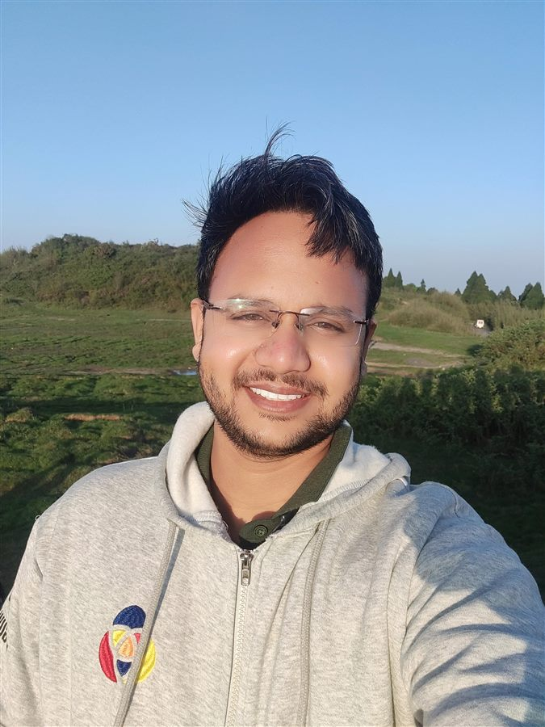
Ph.D. in Transportation Engineering
Ishant Bonde is a Graduate Research Student pursuing his PhD in Transportation Engineering in the Department of Civil Engineering at the University of Memphis. He completed his Master’s degree in Transportation Systems Engineering from the Indian Institute of Technology Guwahati in 2022. His research focuses on traffic safety, spatiotemporal analysis, and proactive safety management, with a particular emphasis on integrating advanced statistical modeling, Bayesian methods, and geospatial analytics to address complex transportation challenges. He is passionate about applying data-driven methodologies and emerging technologies to enhance road safety, and optimize transportation systems.
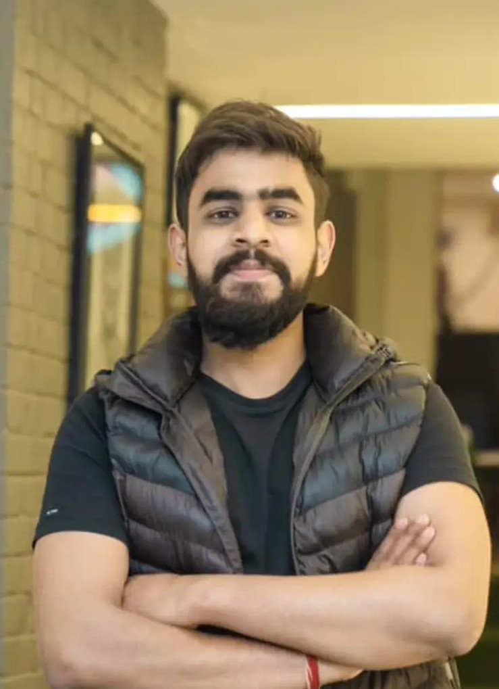
Ph.D. in Transportation Engineering
Aman is a graduate research student pursuing his PhD in Transportation Engineering in the Department of Civil Engineering at the University of Memphis. In the first semester Aman is working on two projects (1) Public Messaging and Behavior Change Systems for Circular Economies, and (2) Applying Induced Travel Study in Urban Areas in Tennessee.

Ph.D. in Transportation Engineering
Tawkir is a doctoral student in the Department of Civil Engineering at the University of Memphis. He completed his master’s in Transportation Engineering from Tongji University in 2024. His research focuses on Traffic Control, including managing traffic flow, reducing congestion, and enhancing safety on expressways and freeways. He is passionate about leveraging advanced technologies to address modern transportation challenges, with key interests in real-time traffic status prediction, traffic simulation and modeling, connected and autonomous vehicles, Intelligent Transportation Systems (ITS), and deep learning and reinforcement learning for transportation applications. For more information, visit his website:www.mdtawkirahmed.com
Ph.D. in Transportation Engineering
Pawan is a doctoral student in the Department of Civil Engineering at the University of Memphis. Currently Pawan is working on two projects (1) Informed Safety, Mobility, & Driver Comfort Enhancement Practices for Work Zones: Learnings from High Fidelity Data, and (2) Strategies for Improved Driver Behavior within Work Zones.
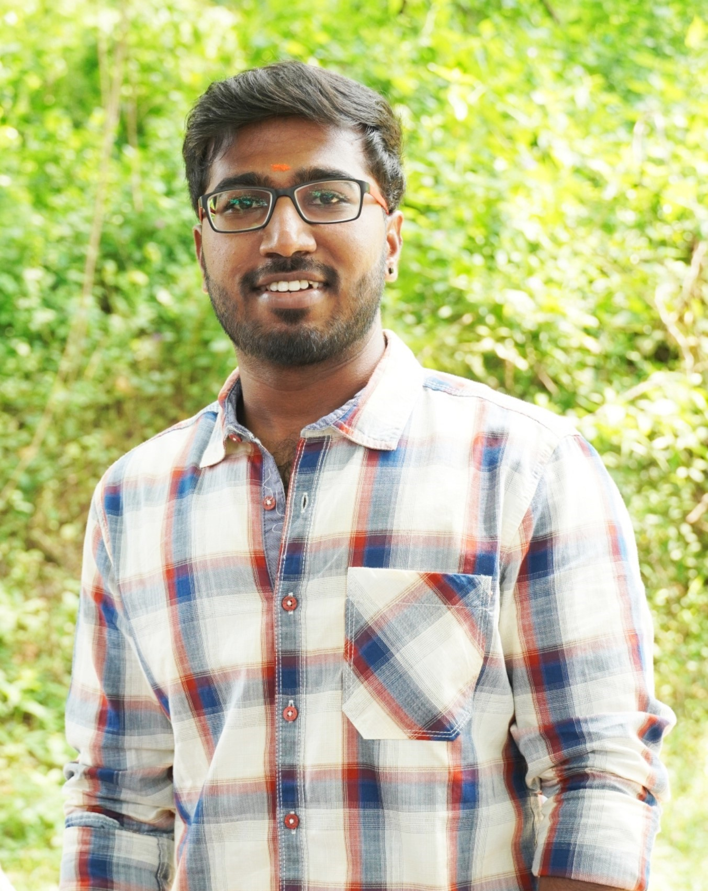
Ph.D. in Transportation Engineering
Veera is a doctoral student in the Department of Civil Engineering at the University of Memphis. He completed his master's in civil engineering, specializing in Transportation Systems Engineering from the Indian Institute of Science(IISc), Bangalore (2023). Before joining UofM, he worked as a Research Professional in Siemens (STSPL) Bangalore, India (2024). His research interests include Transportation Safety, Urban Transport Integration and Planning, and the advanced techniques for improving Driver Behavior.
.png)
Postdoctoral Researcher in Transportation Engineering
Dr. Pranab Kar is a postdoctoral researcher in the Department of Civil Engineering at the UofM, specializing in traffic operations and safety, driver behavior modeling, and ITS. He holds a Ph.D. in Transportation Systems Engineering from the Indian Institute of Technology (IIT), Guwahati, where he focused on proactive safety assessment of rural highways using extreme value theory. At the UofM, Dr. Kar plays a key role in securing federal and state research grants for the C-TIER, and he is currently working on the NSF-CIVIC Federal Project, titled "SSC-CIVIC-PG Track B: Rural Transit Solutions for Enhancing Access & Connectivity for Blue Oval City Hub (REACH)"
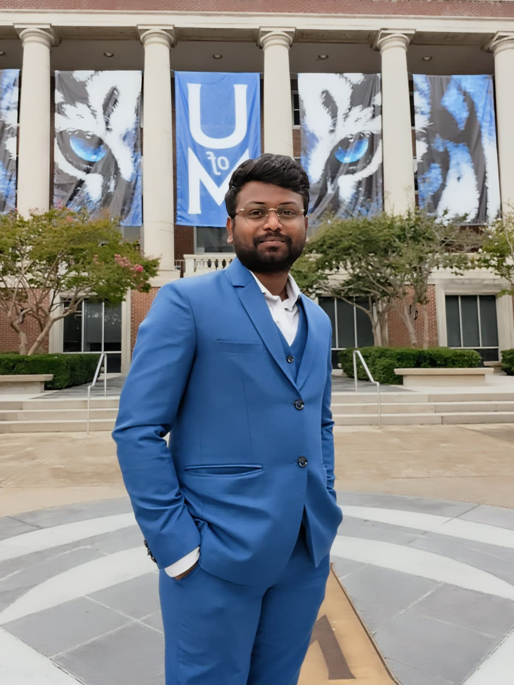
Research Data Analyst
Jaya Prakash Narayana Raavi is a data professional with experience in data engineering, analysis, and business intelligence, with a Master of Science in Data Science from the University of Memphis. Currently a Research Data Specialist at C-TIER, University of Memphis, they develop statistical models and perform exploratory data analysis to support research initiatives. They previously worked as a Data Analyst at the same institution, where they cleaned and processed over 2 million records, improving data accuracy by 95%. As a Business Intelligence Developer at Innovapath, INC, they designed and maintained web-based dashboards using React.js and created interactive data visualizations with D3.JS and Power BI. Their technical skills include Python, SQL, R, and SAS for data engineering, MySQL and MongoDB for databases, and Power BI, Tableau, and Excel for BI tools. They have also completed projects such as designing a database for referral management and creating a statewide land use dashboard for Tennessee. For more information visit his website: website
Alumni
Ph.D. in Transportation Engineering
Avani is a doctoral student in the Department of Civil engineering at the University of Memphis. She completed her master's in Transportation Systems Engineering from the Indian Institute of Technology (IIT), Bombay (2020). Before joining the University of Memphis she worked as a Project Engineer at the National Transportation Planning and Research Centre, India. Her research interest includes Public Transit Connectivity, Transportation equity and Accessibility, and Sustainable Urban transportation.
Ph.D. in Transportation Engineering
Sagarika is a Doctoral Student in the Department of Civil Engineering at the University of Memphis. She completed her Bachelor of Technology in Civil Engineering from the Indian Institute of Technology Ropar (2018 - 2022).
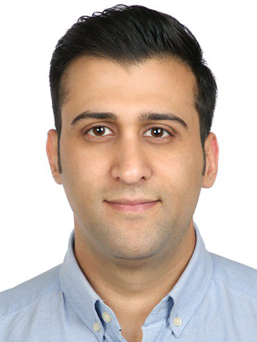
Completed Degree: Ph.D. in Transportation
Dissertation: Commercial Motor Vehicles (CMV) Drivers’ Behavior in Transition from Automated to Manual Driving in Highly Automated Vehicles (level 4).
Currently: Travel Demand Modeler, ATG, Austin, Texas
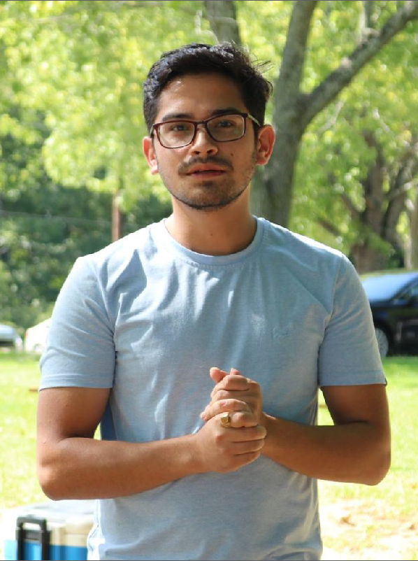
Completed Degree: M.S., and Ph.D. in Transportation
Dissertation: Uncovering Temporal Dynamics in Traffic Safety: Application of Duration-Based Models for Diagnostic and Predictive Analysis)
Currently: Data Analyst, Dallas Area Rapid Transit, Dallas, Texas
Position: Postdoctoral researcher
Currently: Assistant Professor, Indian Institute of Technology (IIT Bhubaneswar), School of Infrastructure

Position: Postdoctoral researcher
Currently: Assistant Professor, Indian Institute of Technology (IIT Kharagpur), Ranbir and Chitra Gupta School of Infrastructure Design and Management
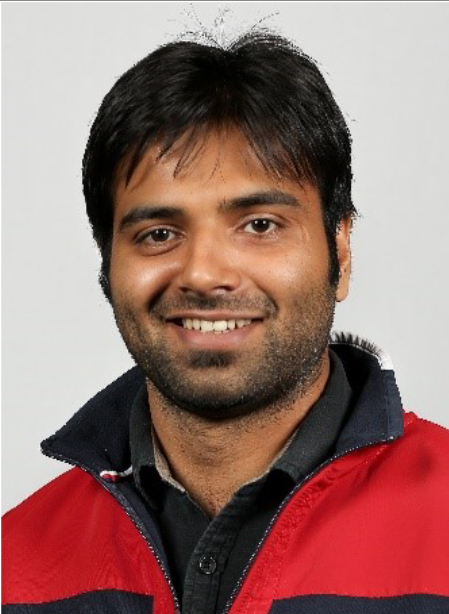
Completed Degree: Ph.D. in Transportation and Postdoctoral researcher
Dissertation: Consumers' adoption of connected and autonomous vehicles (CAVs) based on their social network
Currently: Assistant Professor, Birla Institute of Technology and Science (BITS) Hyderabad, India
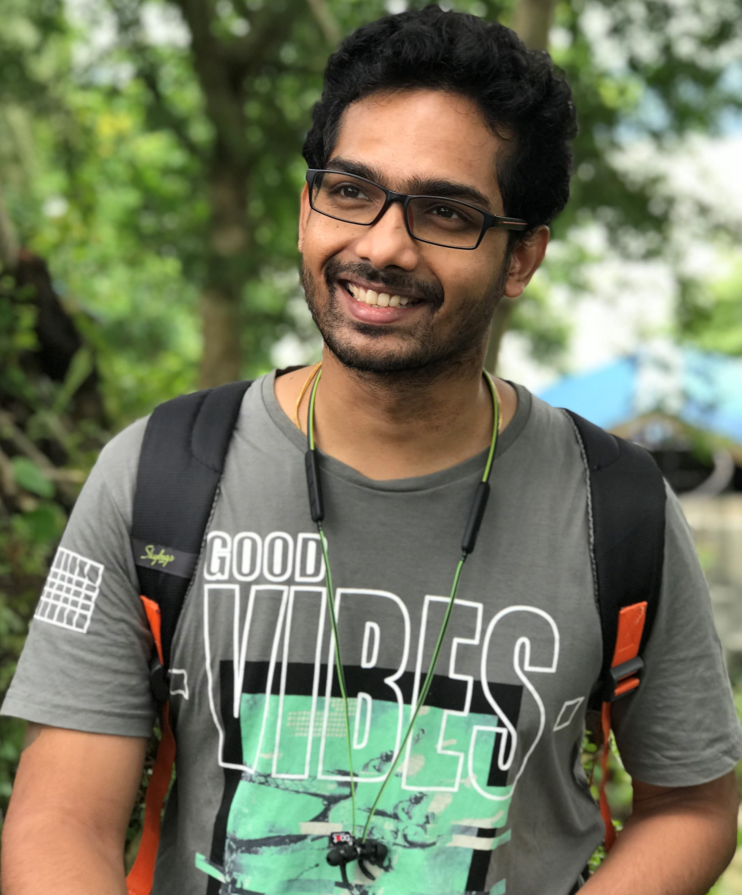
Position: Postdoctoral researcher
Currently: Assistant Professor, Indian Institute of Technology (IIT) Hyderabad, India

Position: Postdoctoral researcher
Currently: Assistant Professor, Indian Institute of Technology (IIT)-BHU, Varanasi, India
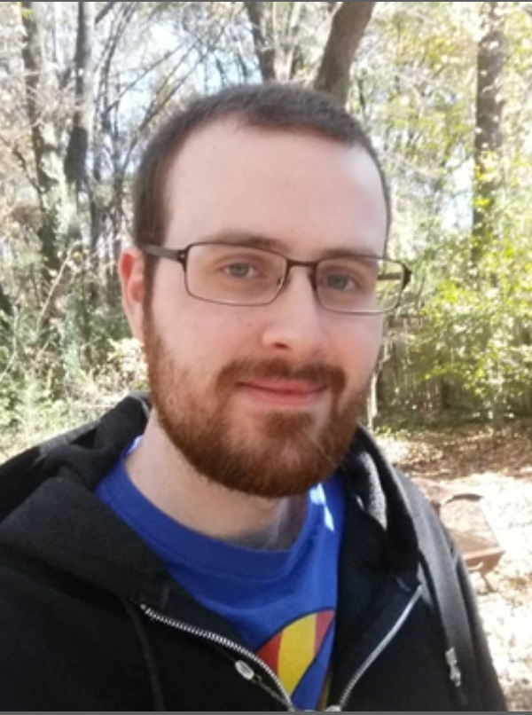
Completed Degree: M.S. and Ph.D. in Transportation
Dissertation: The Adoption of Connected Autonomous Vehicles and Other Innovations by Freight Transportation Organizations
Currently: Civil Engineer at Huitt-Zollars
Completed Degree: M.S. in Transportation
Thesis: Multidimensional Resource Allocation in Freight Transportation Planning: A Case Study of Tennessee
Currently: Associate Regional Planner at Fresno Council of Governments
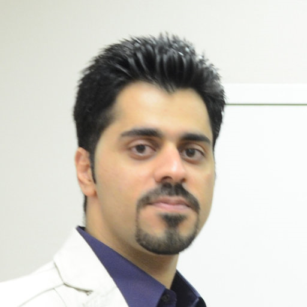
Position: Postdoctoral researcher
Currently: Assistant Professor, Isfahan University of Technology, Iran
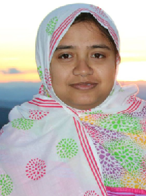
Completed Degree: M.S. in Transportation
Thesis: Modeling frequency of rural demand response transit trips
Currently: Transportation Analyst, Oregon DOT
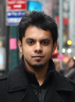
Completed Degree: Ph.D. in Transportation
Dissertation: Multi-Period Transportation Network Investment Decision Making Using Link Ranking and An Econometric Framework
Currently: CDM Smith
Completed Degree: M.S. in Transportation
Thesis: Secondary Crashes: Identification, Visualization and Prediction
Currently: Caltrans
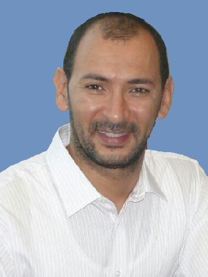
Completed Degree: Ph.D. in Transportation
Dissertation: A Comprehensive Discrete Choice Analysis of Injury Severity in Roadway Work Zone Crashes
Currently: Tennessee Department of Transportation
Completed Degree: M.S. in Transportation
Thesis: Allocation of transportatio resources
Currently: HNTB
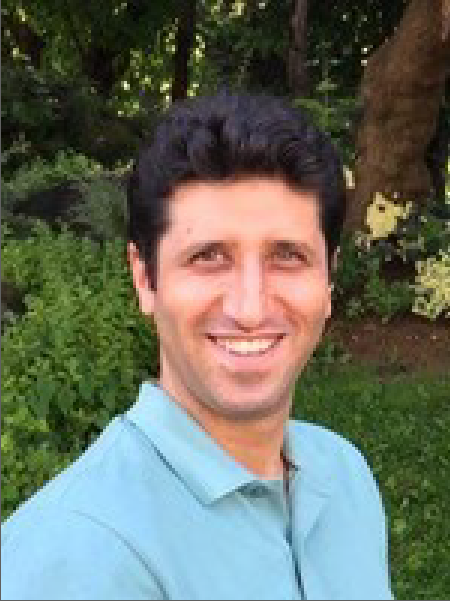
Completed Degre: M.S.
Thesis: A Comprehensive Discrete Choice Analysis of Injury Severity in Roadway Work Zone Crashes
Currently: Software Engineer, Chicago
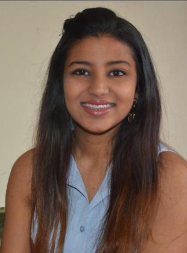
Completed Degree: B.S. in Transportation
Completed Degree: B.S. in Transportation